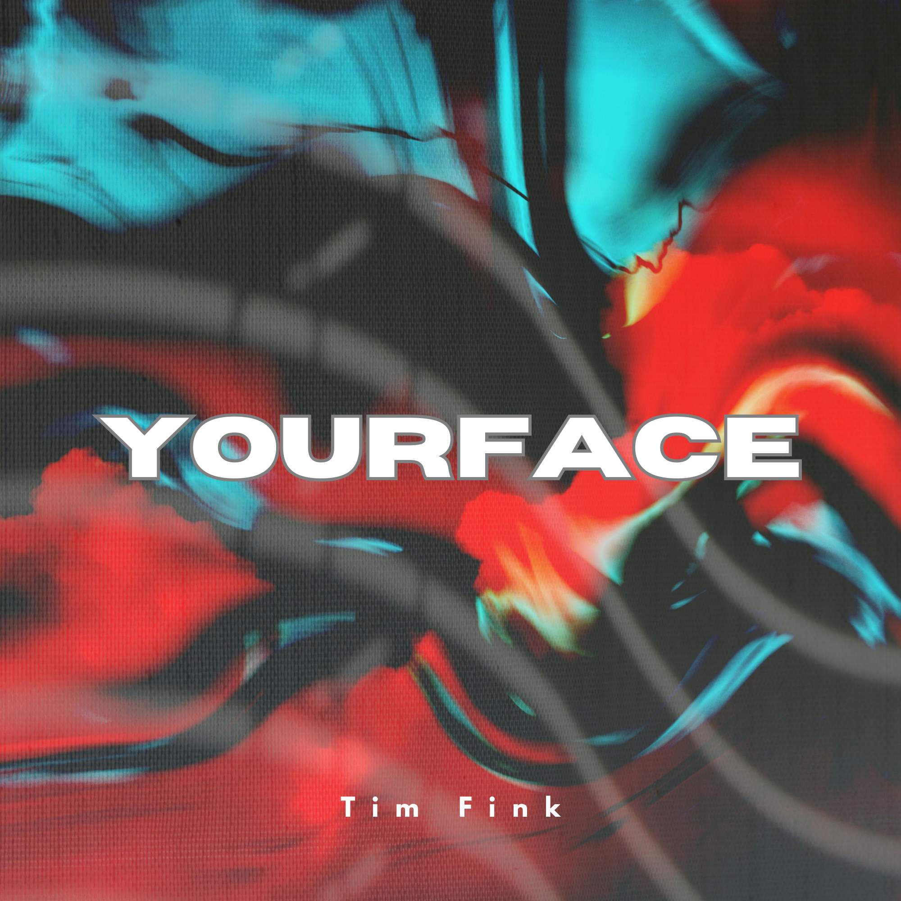

um dich zu verstehen
Atmosphärischer Vibe zwischen Ozean-Soundkulisse und Flow.
Latest Tracks & Productions by Tim Fink
Atmosphärischer Vibe zwischen Ozean-Soundkulisse und Flow.
Irgendwo zwischen verträumt und melancholisch.
Wummernde 808s treffen auf atmosphärische Synthesizer.

Ein experimentellerer Ansatz, der Pop Rap-Vocals mit treibenden elektronischen Elementen und gesungener Hook verbindet.
Ein verträumter Rap-Track gemeinsam mit dem Hamburger Freund und Feature "808 Classic".